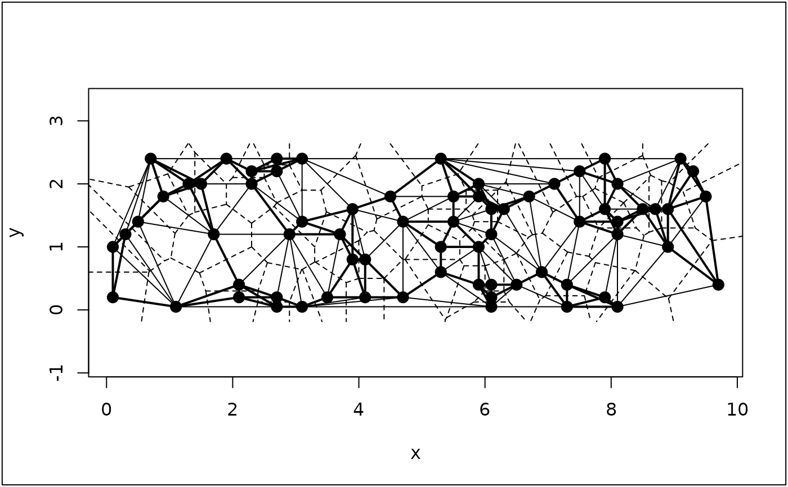

Oribatid mite
oribatid.RdThis data set contains informations about environmental control and spatial structure in ecological communities of Oribatid mites.
Usage
data(oribatid)Format
oribatid is a list containing the following objects :
- fau
: a data frame with 70 rows (sites) and 35 columns (Oribatid species)
- envir
: a data frame with 70 rows (sites) and 5 columns (environmental variables)
- xy
: a data frame that contains spatial coordinates of the 70 sites
Details
Variables of oribatid$envir are the following ones :
substrate: a factor with seven levels that describes the nature of the substratum
shrubs: a factor with three levels that describes the absence/presence of shrubs
topo: a factor with two levels that describes the microtopography
density: substratum density (\(g.L^{-1}\))
water: water content of the substratum (\(g.L^{-1}\))
Source
Data prepared by P. Legendre Pierre.Legendre@umontreal.ca and D. Borcard borcardd@magellan.umontreal.ca
References
Borcard, D., and Legendre, P. (1994) Environmental control and spatial structure in ecological communities: an example using Oribatid mites (Acari Oribatei). Environmental and Ecological Statistics, 1, 37--61.
Borcard, D., Legendre, P., and Drapeau, P. (1992) Partialling out the spatial component of ecological variation. Ecology, 73, 1045--1055.
See a data description at http://pbil.univ-lyon1.fr/R/pdf/pps039.pdf (in French).
Examples
data(oribatid)
ori.xy <- oribatid$xy[, c(2, 1)]
names(ori.xy) <- c("x","y")
plot(ori.xy,pch = 20, cex = 2, asp = 1)
if(requireNamespace("deldir", quietly = TRUE) & requireNamespace("spdep", quietly = TRUE)) {
plot(deldir::deldir(ori.xy), add = TRUE)
if(adegraphicsLoaded()) {
s.label(ori.xy, nb = spdep::knn2nb(spdep::knearneigh(as.matrix(ori.xy), 3)), plab.cex = 0)
} else {
s.label(ori.xy, add.p = TRUE, clab = 0,
neig = nb2neig(spdep::knn2nb(spdep::knearneigh(as.matrix(ori.xy), 3))))
}
}
